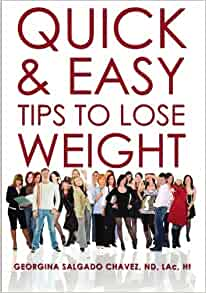

The Easy Way to Lose Weight (Allen Carr's Easyway, 1): Carr, Allen: 9781784044954: Amazon.com: Books
 Skip to main content .us Deliver to Czech Republic Hello, Sign in Account & Lists Returns & Orders 0 Cart All Today's Deals Customer Service Gift Cards Registry Sell Disability Customer Support Amazon's response to COVID-19 Books Advanced Search New Releases Best Sellers & More Children's Books Textbooks Textbook Rentals Best Books of the Month Books › Health, Fitness & Dieting › Alternative Medicine Share Embed Add to book club Loading your book clubs There was a problem loading your book clubs. Please try again. Not in a club? Learn moreJoin or create book clubs
Choose books together
Track your books Bring your club to Amazon Book Clubs, start a new book club and invite your friends to join, or find a club that’s right for you for free. Explore Amazon Book Clubs Flip to back Flip to front Listen Playing Paused You re listening to a sample of the Audible audio edition.
Learn more See all 2 images
Follow the Author
Allen Carr + FollowSimilar authors to follow
+ + + See more recommendations Something went wrong. Please try your request again later.OK
The Easy Way to Lose Weight (Allen Carr s Easyway, 1) Paperback – August 15, 2014
by Allen Carr (Author) › Visit Amazon's Allen Carr Page Find all the books, read about the author, and more. See search results for this author Are you an author? Learn about Author Central Allen Carr (Author) 3.9 out of 5 stars 314 ratings See all formats and editions Sorry, there was a problem loading this page. Try again. Price New from Used from Kindle "Please retry" $8.49 Paperback "Please retry" $16.95 $12.95 $6.38 Kindle$8.49 Read with Our Free App Paperback
$16.95 30 Used from $6.38 10 New from $12.95 Read more Read less Previous page Print length 256 pages Language English Publisher Arcturus Publication date August 15, 2014 Dimensions 6 x 0.75 x 8.75 inches ISBN-10 1784044954 ISBN-13 978-1784044954 See all details Next page click to open popover
Enter your mobile number or email address below and we'll send you a link to download the free Kindle App. Then you can start reading Kindle books on your smartphone, tablet, or computer - no Kindle device required.
Apple Android Windows Phone Android
To get the free app, enter your mobile phone number.
or Download to your computer Mac Windows 8, 8 RT, 10 and Modern UI Windows 8 desktop, Windows 7, XP & Vista Kindle Cloud Reader Read instantly in your browserFrequently bought together
More items to explore
Page 1 of 1 Start over Page 1 of 1 Previous page Allen Carr's Easy Way to Quit Emotional Eating: Set yourself free from binge-eating and comfort-eating (Allen Carr's Easyway, 17) Allen Carr 4.4 out of 5 stars 379 Paperback 29 offers from $8.99 Allen Carr's Easy Way for Women to Lose Weight: The original Easyway method (Allen Carr's Easyway, 7) Allen Carr 4.1 out of 5 stars 628 Paperback $13.40 Good Sugar Bad Sugar: Eat yourself free from sugar and carb addiction (Allen Carr's Easyway, 6) Allen Carr 4.2 out of 5 stars 418 Paperback $13.48 The Keto Reset Diet: Reboot Your Metabolism in 21 Days and Burn Fat Forever Mark Sisson 4.4 out of 5 stars 1,965 Paperback 36 offers from $10.70 Alcoholics Anonymous - Big Book Alcoholics Anonymous 4.6 out of 5 stars 2,141 Hardcover $21.25 Allen Carr's Easy Way to Quit Smoking Without Willpower - Incudes Quit Vaping: The best-selling quit smoking method updated for the 21st century Allen Carr 4.5 out of 5 stars 1,370 Paperback #1 Best Seller in Hypnosis for Diets $11.20 Next pageCustomers who bought this item also bought
Page 1 of 1 Start over Page 1 of 1 Previous page Allen Carr's Easy Way to Quit Emotional Eating: Set yourself free from binge-eating and comfort-eating (Allen Carr's Easyway, 17) Allen Carr 4.4 out of 5 stars 379 Paperback 29 offers from $8.99 Good Sugar Bad Sugar: Eat yourself free from sugar and carb addiction (Allen Carr's Easyway, 6) Allen Carr 4.2 out of 5 stars 418 Paperback $13.48 Allen Carr's Quit Drinking Without Willpower: Be a happy nondrinker (Allen Carr's Easyway, 2) Allen Carr 4.5 out of 5 stars 1,128 Paperback $13.46 Allen Carr's Easyway to Control Alcohol Allen Carr 4.4 out of 5 stars 1,935 Paperback $11.40 Allen Carr's Easy Way for Women to Lose Weight: The original Easyway method (Allen Carr's Easyway, 7) Allen Carr 4.1 out of 5 stars 628 Paperback $13.40 Allen Carr's Easy Way to Stop Smoking Allen Carr 4.5 out of 5 stars 4,376 Paperback #1 Best Seller in Smoking Recovery $10.89 Next pageSpecial offers and product promotions
Amazon Business: Make the most of your Amazon Business account with exclusive tools and savings. Login nowEditorial Reviews
About the Author
Allen Carr (1934-2006) was a chain-smoker for over 30 years. In 1983, after countless failed attempts to quit, he went from 100 cigarettes a day to zero without suffering withdrawal pangs, without using willpower and without gaining weight. He realised that he had discovered what the world had been waiting for - the Easy Way to Stop Smoking - and embarked on a mission to help cure the world's smokers.
Easyway has grown to become a global phenomenon with seminar centres in 150+ cities in more than 50 countries around the world. Allen Carr's Easyway books, online video programmes, and live group seminars have helped an estimated 50 million smokers worldwide. A vast majority of those happy non-smokers became aware of the method as a result of personal recommendation from their friends, family, and colleagues.
Allen Carr is now recognised as the world's leading expert on helping smokers to quit and has sold over 16 million books on the topic. His Easyway method has been successfully applied to a host of issues including weight control, alcohol and other addictions and fears. In 2006, Allen was diagnosed with lung cancer and passed away that November handing responsibility for Easyway over to his closest and most trusted colleagues.
Product details
Publisher : Arcturus; Pap/Com edition (August 15, 2014) Language : English Paperback : 256 pages ISBN-10 : 1784044954 ISBN-13 : 978-1784044954 Item Weight : 11.5 ounces Dimensions : 6 x 0.75 x 8.75 inches Best Sellers Rank: #77,372 in Books ( See Top 100 in Books ) #16 in Hypnosis for Diets #32 in Homeopathy Medicine #801 in Weight Loss Diets (Books) Customer Reviews: 3.9 out of 5 stars 314 ratingsVideos
Page 1 of 1 Start Over Page 1 of 1 Previous pageVideos for this product
1:50
Click to play video
How to Lose Weight in a Healthy Way
eHow Next page Upload your video Customer Review: How to Lose Weight in a Healthy Way See full review eHow Onsite Associates Program Amazon InfluencerCustomer reviews
3.9 out of 5 stars 3.9 out of 5 314 global ratings 5 star 53% 4 star 13% 3 star 14% 2 star 10% 1 star 10% How are ratings calculated? To calculate the overall star rating and percentage breakdown by star, we don’t use a simple average. Instead, our system considers things like how recent a review is and if the reviewer bought the item on Amazon. It also analyzes reviews to verify trustworthiness.Reviews with images
See all customer images Top reviews Most recent Top reviewsTop reviews from the United States
There was a problem filtering reviews right now. Please try again later.
Brendan Kuntz 5.0 out of 5 stars Keep an open mind Reviewed in the United States on February 14, 2017 Verified Purchase Carr does emphasize eating foods that are healthier for you and not eating (or eating less of) foods which are not good for you such as meat, dairy and refined sugars / carbohydrates. Those who are dismissing or simplifying the book down to "become a vegan" are missing the greater point that there are certain foods our bodies are designed to digest, and we should eat more of those foods, and less of foods that we are not designed to handle. I read the book in a few hours over this past weekend, and listened to the audio CD at the end. For the past week, I have been eating much better, and every time I see (or smell) some food which in the past would have been trouble (for me it was primarily sugar / candy) I come to the decision that I don't want it. Reading the book has helped me want to eat better, and after a week I have, and I also feel tremendous.Of course, with any type of weight loss system, or program long term results are most important, and time will tell if this continues to work for me. Still, I'd recommend the book and say it's worth a shot if you can go into it with an open mind.
Coming back one month later to post an update. It's still working, and I'm down about 35 lbs so far. My meat consumption has gone down significantly but I haven't cut it out completely (now I eat 2-3 small portions per week.) . My non-fruit sugar consumption is also way down, almost completely cut out. And the best part is, I don't really feel like I'm missing these things, I'm happy to eat fruit, vegetables and nuts, and feeling hungry before dinner has become a good thing!
Three Month Update - I am down almost 60 lbs, fairly close to my target weight. I just ran my first 5k, and started running regularly, not to lose weight, but because I am enjoying it. Try this book! Read more 173 people found this helpful Helpful Report abuse just some dude 2.0 out of 5 stars Reads like an outline for several future books Reviewed in the United States on August 16, 2017 Verified Purchase This book is different from Allen Carr's other motivational books, in both interesting and confusing ways. The goal of it is to get you to eat what you want, as much as you want, when you want, without any diets, and still lose weight. By following Nature's Guide - a psuedo-vegan diet. Other reviewers point out the contradiction between those two sentences, but that is the clever way Allen Carr is trying to modify our eating choices. Eat what you want - but do you really want sugar and meat? As much as you want - but do you really need to eat that much?
While that is clever and interesting, overall this book is by far the most conventional in its advice of all the Carr books I have read. I have heard many of these same arguments from nutritionist and other diet experts. And that is also why I can't write that I liked this book. It is way too scattershot and doesn't linger on any particular aspect of diet for long enough for any of it to sink in. If he had just focused on stopping sugar consumption, that would have been a far better book, because he does have a lot of interesting things to say about that particular topic, and that would go along way to getting weight under control for many. Instead it leaps off into arguments targeting meat eating, the dangers of dairy products and for a book that is supposed to be about losing weight, meat and dairy products can be consumed quite easily and safely while maintaining a healthy weight. So the overall effect is that it emulates the "sweeping change" strategy that makes so many people fail at dieting, while also condemning the idea of diets itself throughout the book. And he does allow for a "junk margin" that makes it so you can still eat all of these things he just made arguments against, so that also further muddles the focus.
Allen Carr often gets dinged in reviews for the repetition of his arguments, but I always thought that was a good counter-brainwashing tactic to emphasize how faulty the reader's thinking is a topic and burn it into the brain that the answer is not an addiction. It worked, too - his quit smoking book has me without a cigarette for three years now. But in contrast, this book casts such a wide net in its stated goal that it doesn't ever gain any steam on any one track, and ended up overwhelming me.
In short, I don't think the Allen Carr method works to get you to change something, as much as it does to get you to stop something. Stopping something dangerous and stupid is very easy to do, but no one can stop eating. It might have worked in a more targeted and focused book against sugar, but as an all-encompassing diet change, it doesn't work at all. I am three weeks in on his "Quit Drinking" book (which is great) and I am hoping that by quitting alcohol I will have solved most of my weight problems. This book, I gave it a try, but it just isn't doing it for me. Read more 44 people found this helpful Helpful Report abuse Augiesez 2.0 out of 5 stars You can eat anything you want as long and you become a vegetarian! There saved you $9.00 Reviewed in the United States on October 14, 2019 Verified Purchase I disliked the long lead up to the bottom line - Become a vegetarian (or better yet a raw foods vegan). It felt like a bad Amway presentation that takes and hour and a half to spring the bad news on you. It is packed with bad nutritional advice that is debunked by all the keto and paleo research. I read this because of the glowing review of other Allen Carr book on giving up alcohol but this was a real disappointment. If I wanted to be a skinny, lifeless vegan I'd revisit my childhood when I was given no choice. I picture the listless vegans trying to feign enjoyment of their greens with lemon juice, yuck! Now I enjoy meats and fats of all kinds, if it's cute in the field it's even tastier on the tongue (I'm looking at you, Mr. adorable Lamb!). Sure it sucks to kill stuff for fun but kill to grill? YUM! Read more 21 people found this helpful Helpful Report abuse Amazon Customer 1.0 out of 5 stars It has good instructions until it tells you to become a fruitarian Reviewed in the United States on October 10, 2019 Verified Purchase I understand why he says you can eat as much of the food you want, as many times as you want, any time you want during the day. Because he has somehow been influenced by Seventh Day Adventist in recommending nutrient sparing foods like fruit, vegetables, and seeds. So, if you want to lose all the weight because you can't absorb anything and you are gassy all the time. Do this. If you want to actually feel great (even after 10 years) drop the ingredist stuff and eat meat, eggs, and diary (if you can handle dairy). You won't have to eat very much, many times, or much at all since all three have super high bioavailability unlike his recommendations. Right now I have lost 60 pounds and I eat once or twice a day and until I am full. So, good instructions, he is just wrong about meat and diary. Also, he said there were bad things about it and science disagrees with him, so do hunter/gather tribes. Read more 14 people found this helpful Helpful Report abuse See all reviews
Top reviews from other countries
Sue 5.0 out of 5 stars Life changing! Reviewed in the United Kingdom on January 19, 2019 Verified Purchase I read this book after it was recommended to me. Allen Carr suggests to read the book with an open mind, so I did, I actually read the whole book in one day. I have never looked back! I now only desire to eat fresh food from Mother Nature, I don’t even see manufactured food as food! I don’t have any cravings for these foods any more, I am free of my sugar addiction too. All I enjoy eating is fruit, veg, pulses, nuts, seeds etc etc. I never use to crave an apple! I do now 😄, fruit was at the bottom of my food pile, now it’s at the top. This book has changed my life, I amLoosing weight naturally, I am never hungry and I really enjoy eating like I did before but now it’s natural foods. I have so much more energy as well. Life changing - read the book with an open mind and I hope it changes others lives like it has mine! Read more 16 people found this helpful Report abuse Simon C 4.0 out of 5 stars Another weight loss book! Reviewed in the United Kingdom on September 24, 2019 Verified Purchase Good book. I'm still fat though lol! Good tool as many of these books are but you have to want to do it. Otherwise its just another weight loss book for the shelf. Read more 9 people found this helpful Report abuse Jane Large 5.0 out of 5 stars Inspirational Reviewed in the United Kingdom on October 6, 2018 Verified Purchase Very easy to read and understand. The cd for when you finish the book is excellent. So far so good. Read more 6 people found this helpful Report abuse Amazon Customer 3.0 out of 5 stars Very good. Reviewed in the United Kingdom on October 18, 2020 Verified Purchase I bought this to help me eat less sugar and bad foods. I does work initially but wanes a bit after a while. Does need some will power but informative and does change toy views on processed foods. Read more One person found this helpful Report abuse Elaine Corner 4.0 out of 5 stars Recommended so I bought for my daughter who after reading Reviewed in the United Kingdom on February 20, 2016 Verified Purchase Recommended so I bought for my daughter who after reading it and with changes to her eating habits has lost over a stone in weight and feels she has so much more energy, therefore an excellent buy. Read more 13 people found this helpful Report abuse See all reviews
Customers who viewed this item also viewed
Page 1 of 1 Start over Page 1 of 1 Previous page Next pageYour recently viewed items and featured recommendations › View or edit your browsing history After viewing product detail pages, look here to find an easy way to navigate back to pages you are interested in.
Back to top Get to Know Us Careers Blog About Amazon Investor Relations Amazon Devices Make Money with Us Sell products on Amazon Sell on Amazon Business Sell apps on Amazon Become an Affiliate Advertise Your Products Self-Publish with Us Host an Amazon Hub › See More Make Money with Us Amazon Payment Products Amazon Business Card Shop with Points Reload Your Balance Amazon Currency Converter Let Us Help You Amazon and COVID-19 Your Account Your Orders Shipping Rates & Policies Returns & Replacements Manage Your Content and Devices Amazon Assistant Help English Choose a language for shopping. $ USD - U.S. Dollar United States Choose a country/region for shopping. Amazon Music
Stream millions
of songs Amazon Advertising
Find, attract, and
engage customers Amazon Drive
Cloud storage
from Amazon 6pm
Score deals
on fashion brands AbeBooks
Books, art
& collectibles ACX
Audiobook Publishing
Made Easy Alexa
Actionable Analytics
for the Web Sell on Amazon
Start a Selling Account Amazon Business
Everything For
Your Business AmazonGlobal
Ship Orders
Internationally Home Services
Experienced Pros
Happiness Guarantee Amazon Ignite
Sell your original
Digital Educational
Resources Amazon Web Services
Scalable Cloud
Computing Services Audible
Listen to Books & Original
Audio Performances Book Depository
Books With Free
Delivery Worldwide Box Office Mojo
Find Movie
Box Office Data ComiXology
Thousands of
Digital Comics DPReview
Digital
Photography East Dane
Designer Men's
Fashion Fabric
Sewing, Quilting
& Knitting Goodreads
Book reviews
& recommendations IMDb
Movies, TV
& Celebrities IMDbPro
Get Info Entertainment
Professionals Need Kindle Direct Publishing
Indie Digital & Print Publishing
Made Easy Prime Video Direct
Video Distribution
Made Easy Shopbop
Designer
Fashion Brands Woot!
Deals and
Shenanigans Zappos
Shoes &
Clothing Ring
Smart Home
Security Systems eero WiFi
Stream 4K Video
in Every Room Blink
Smart Security
for Every Home Neighbors App
Real-Time Crime
& Safety Alerts Amazon Subscription Boxes
Top subscription boxes – right to your door PillPack
Pharmacy Simplified Amazon Second Chance
Pass it on, trade it in,
give it a second life Conditions of Use Privacy Notice Interest-Based Ads © 1996-2021, Amazon.com, Inc. or its affiliates